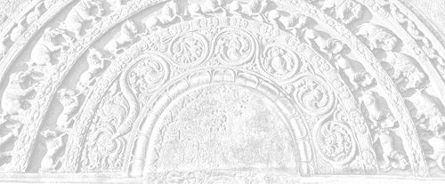

Sermon 7
Namo tassa bhagavato arahato sammāsambuddhassa
Namo tassa bhagavato arahato sammāsambuddhassa
Namo tassa bhagavato arahato sammāsambuddhassaEtaṁ santaṁ, etaṁ paṇītaṁ,
yadidaṁ sabbasaṅkhārasamatho sabbūpadhipaṭinissaggo
taṇhakkhayo virāgo nirodho nibbānaṁ.1“This is peaceful, this is excellent,
namely the stilling of all preparations, the relinquishment of all assets,
the destruction of craving, detachment, cessation, extinction.”
With the permission of the Most Venerable Great Preceptor and the assembly of the venerable meditative monks. Towards the end of the last sermon we happened to quote a certain verse from the Kevaḍḍhasutta of the Dīgha Nikāya. The verse runs as follows:
Viññāṇaṁ anidassanaṁ,
anantaṁ sabbato pabhaṁ,
ettha āpo ca paṭhavī,
tejo vāyo na gādhati,
ettha dīghañca rassañca,
aṇuṁ thūlaṁ subhāsubhaṁ,
ettha nāmañca rūpañca,
asesaṁ uparujjhati,
viññāṇassa nirodhena,
etth’etaṁ uparujjhati.2
The other day, we could give only a general idea of the meaning of this verse in brief, because of the question of time. Today, we propose to attempt a detailed explanation of it. To start with, we purposely avoid rendering the first two lines, which appear as the crux of the whole verse. Taking those two lines as they are, we could paraphrase the verse as follows:
It is in a consciousness, that is anidassana, ananta, and sabbato pabha, that earth, water, fire, and air do not find a footing. It is in this consciousness that long and short, fine and coarse, and pleasant and unpleasant, as well as name-and-form, are kept in check. It is by the cessation of consciousness that all these are held in check.
Let us now try to sort out the meaning of the difficult words in the first two lines. First of all, in the expression viññāṇaṁ anidassanaṁ, there is the term anidassana. The meaning of the word nidassana is fairly well known. It means ‘illustration’. Something that ‘throws light on’ or ‘makes clear’ is called nidassana. This is the basic sense.
We find an instance of the use of this word, even in this basic sense, in the first Kosalasutta among the Tens of the Aṅguttara Nikāya. It is in connection with the description of abhibhāyatanā, bases of mastery, where there is a reference to contemplation devices known as kasiṇa. It is said that even the flax flower can be used initially as a sign for kasiṇa meditation. A flax flower is described in the following words:
Umāpupphaṁ nīlaṁ nīlavaṇṇaṁ nīlanidassanaṁ nīlanibhāsaṁ,3
Which may be rendered as:
The flax flower, blue, blue-coloured, manifesting blue, shining blue.
Nīlanidassanaṁ suggests that the flax flower is an illustration of blue colour, or that it is a manifestation of blue. Anidassana could therefore be said to refer to whatever does not manifest anything.
In fact, we have a very good example in support of this suggested sense in the Kakacūpamasutta of the Majjhima Nikāya. There we find the Buddha putting a certain question to the monks in order to bring out a simile:
Monks, suppose a man comes with crimson, turmeric, indigo or carmine and says:
‘I shall draw pictures and make pictures appear on the sky!’
What do you think, monks, could that man draw pictures and make pictures appear there?
Then the monks reply:
Ayañhi, bhante, ākāso arūpī anidassano. Tattha na sukaraṁ rūpaṁ likhituṁ, rūpapātubhāvaṁ kātuṁ.4
This sky, Lord, is immaterial and non-illustrative. It is not easy to draw a picture there or make manifest pictures there.
Here we have the words in support of the above suggested meaning. The sky is said to be arūpī anidassano, immaterial and non-illustrative. That is why one cannot draw pictures there or make pictures appear there. There is nothing material in the sky to make manifest pictures. That is, the sense in which it is called anidassano in this context.
Let us now see how meaningful that word is, when used with reference to consciousness as viññāṇaṁ anidassanaṁ. Why the sky is said to be non-manifestative we could easily understand by the simile. But how can consciousness become non-manifestative?
First and foremost we can remind ourselves of the fact that our consciousness has in it the ability to reflect. That ability is called paccavekkhana, ‘looking back’. Sometimes the Buddha has given the simile of the mirror with reference to this ability, as for instance in the Ambalatthikā Rāhulovādasutta of the Majjhima Nikāya.5
In the Ānandasutta of the Khandhasaṁyutta, also, he has used the simile of the mirror.6
In the former sutta preached to Venerable Rāhula the Buddha uses the simile of the mirror to stress the importance of reflection in regard to bodily, verbal, and mental action.
In our last sermon, we gave a simile of a dog crossing a plank over a stream and looking at its own reflection in the water.7 That, too, is a kind of reflection. But from that we can deduce a certain principle with regard to the question of reflection, namely, that the word stands for a mode of becoming deluded as well as a mode of getting rid of the delusion. What creates a delusion is the way that dog is repeatedly looking down from his own point of view on the plank to see a dog in the water.
That is unwise reflection born of non-radical attention, ayoniso manasikāra. Under the influence of the personality view, sakkāyadiṭṭhi, it goes on looking at its own image, wagging its tail and growling. But wise reflection born of radical attention, yoniso manasikāra, is what is recommended in the Ambalatthikā Rāhulovādasutta with its thematic repetitive phrase paccavekkhitvā, paccavekkhitvā,8 ‘reflecting again and again’.
Wise reflection inculcates the Dhamma point of view. Reflection based on Right View, sammā diṭṭhi, leads to deliverance. So this is the twin aspect of reflection. But this we mention by the way. The point we wish to stress is that consciousness has in it the nature of reflecting something, like a mirror.
Now viññāṇaṁ anidassanaṁ is a reference to the nature of the released consciousness of an arahant. It does not reflect anything. To be more precise, it does not reflect a nāma-rūpa, or name-and-form.
An ordinary individual sees a nāma-rūpa, when he reflects, which he calls ‘I’ and ‘mine’. It is like the reflection of that dog, which sees its own delusive reflection in the water. A non-arahant, upon reflection, sees name-and-form, which however he mistakes to be his self. With the notion of ‘I’ and ‘mine’ he falls into delusion with regard to it. But the arahant’s consciousness is an unestablished consciousness.
We have already mentioned in previous sermons about the established consciousness and the unestablished consciousness.9 A non-arahant’s consciousness is established on name-and-form.
The unestablished consciousness is that which is free from name-and-form and is unestablished on name-and-form. The established consciousness, upon reflection, reflects name-and-form, on which it is established, whereas the unestablished consciousness does not find a name-and-form as a reality.
The arahant has no attachments or entanglements in regard to name-and-form. In short, it is a sort of penetration of name-and-form, without getting entangled in it. This is how we have to unravel the meaning of the expression anidassana viññāṇa.
By way of further clarification of this sense of anidassana, we may remind ourselves of the fact that manifestation requires something material. That is obvious even from that simile picked up at random from the Kakacūpamasutta. As for the consciousness of the arahant, the verse in question makes it clear that earth, water, fire, and air do not find a footing there.
It is because of these four great primaries that one gets a perception of form. They are said to be the cause and condition for the designation of the aggregate of form:
Cattāro kho, bhikkhu, mahābhūtā hetu, cattāro mahābhūtā paccayo rūpakkhandhassa paññāpanāya.10
The four great primaries, monk, are the cause and condition for the designation of the form group.
Now the arahant has freed his mind from these four elements. As it is said in the Dhātuvibhaṅgasutta:
Paṭhavīdhātuyā cittaṁ virājeti,11
he makes his mind dispassionate with regard to the earth-element.
Āpodhātuyā cittaṁ virājeti,
he makes his mind dispassionate with regard to the water-element.
As he has freed his mind from the four elements through disenchantment, which makes them fade away, the arahant’s reflection does not engender a perception of form. As the verse in question puts it rather rhetorically:
ettha āpo ca paṭhavī, tejo vāyo na gādhati,
herein water and earth, fire and air find no footing.
Here the word gādhati is particularly significant. When, for instance, we want to plumb the depth of a deep well, we lower something material as a plumb into the well. Where it comes to stay, we take as the bottom. In the consciousness of the arahant, the material elements cannot find such a footing. They cannot manifest themselves in that unplumbed depth of the arahant’s consciousness.
Viññāṇaṁ anidassanaṁ,
anantaṁ sabbato pabhaṁ,
ettha āpo ca paṭhavī,
tejo vāyo na gādhati.Consciousness, which is non-manifestative,
Endless and lustrous on all sides,
It is here that water, earth,
Fire, and air no footing find.
It is precisely because the material elements cannot make themselves manifest in it, that this consciousness is called ‘non-manifestative’. In the same connection we may add that such distinctions as long and short, fine and coarse, and pleasant and unpleasant are not registered in that consciousness, because they pertain to things material. When the consciousness is freed from the four elements, it is also free from the relative distinctions, which are but the standards of measurements proper to those elements.
Let us now consider the implications of the term anantaṁ – ‘endless’, ‘infinite’. We have already said something about the plumbing of the depth of waters. Since the material elements have faded away in that consciousness, they are unable to plumb its depth. They no longer serve as an ‘index’ to that consciousness. Therefore, that consciousness is endless or infinite.
It is endless also in another sense. With regard to such distinctions as ‘long’ and ‘short’ we used the word ‘relative’. These are relative concepts. We even refer to them as conjoined pairs of terms. In worldly usage they are found conjoined as ‘long and short’, ‘fine and coarse’, ‘pleasant and unpleasant’. There is a dichotomy about these concepts, there is a bifurcation. It is as if they are put within a rigid framework.
When, for instance, we go searching for a piece of wood for some purpose or other, we may say: “This piece of wood is too long”. Why do we say so? Because we are in need of a shorter one. Instead of saying that it is not ‘sufficiently’ short, we say it is too long. When we say it is too short, what we mean is that it is not sufficiently long. So then, long and short are relevant within one framework. As a matter of fact, all measurements are relative to some scale or other. They are meaningful within some framework of a scale.
In this sense, too, the worldling’s way of thinking has a tendency to go to extremes. It goes to one extreme or the other. When it was said that the world, for the most part, rests on a dichotomy, such as that between the two views ‘Is’ and ‘Is not’,12 this idea of a framework is already implicit. The worldling’s ways of thought ‘end-up’ in one extreme or the other within this framework. The arahant transcends it, his consciousness is, therefore, endless, ananta.
There is a verse in the Pāṭaligāmiyavagga of the Udāna, which clearly brings out this fact. Most of the discourses in that section of the Udāna deal with Nibbāna – Nibbānapaṭisaṁyutta – and the following verse, too, is found in such a discourse.
Duddasaṁ anantaṁ nāma,
na hi saccaṁ sudassanaṁ,
paṭividdhā taṇhā jānato,
passato natthi kiñcanaṁ.13
This verse, like many other deep ones, seems to have puzzled the commentators. Let alone the meaning, even the variant readings had posed them a problem, so much so that they end up giving the reader a choice between alternate interpretations. But let us try to get at the general trend of its meaning.
Duddasaṁ anantaṁ nāma, “hard to see is the endless” – whatever that ‘endless’ be.
Na hi saccaṁ sudassanaṁ, “the truth is not easily seen”, which in effect is an emphatic assertion of the same idea. One could easily guess that this ‘endless’ is the truth and that it refers to Nibbāna.
Paṭividdhā taṇhā means that “craving has been penetrated through”. This penetration is through knowledge and wisdom, the outcome of which is stated in the last line.
Janato passato natthi kiñcanaṁ, “to one who know and sees there is NOTHING”. The idea is that when craving is penetrated through with knowledge and wisdom, one realizes the voidness of the world. Obviously, the reference here is to Nibbāna.
The entire verse may now be rendered as follows:
Hard to see is the Endless,
Not easy ’tis to see the truth,
Pierced through is craving,
And naught for him who knows and sees.
The commentator, however, is at a loss to determine whether the correct reading is anataṁ or anantaṁ and leaves the question open. He gives one interpretation in favour of the reading anataṁ.14
To show its justifiability he says that natā is a synonym for taṇhā, or craving, and that anataṁ is a term for Nibbāna, in the sense that there is no craving in it. It must be pointed out that it is nati and not natā that is used as a synonym for taṇhā.
Anyway, after adducing reasons for the acceptability of the reading anataṁ, he goes on to say that there is a variant reading, anantaṁ, and gives an interpretation in support of it too. In fact, he interprets the word anantaṁ in more than one sense. Firstly, because Nibbāna is permanent, it has no end. And secondly it is endless because it is immeasurable, or appamāṇa.
In our interpretation of the word anantaṁ we have not taken it in the sense of permanence or everlastingness. The word appamāṇa, or immeasurable, can have various nuances. But the one we have stressed is the transcendence of relative concepts, limited by their dichotomous nature. We have also alluded to the unplumbed depth of the arahant’s consciousness, in which the four elements do not find a footing.
In the Buddhavagga of the Dhammapada we come across another verse which highlights the extraordinary significance of the word anantaṁ.
Yassa jālinī visattikā,
taṇhā natthi kuhiñci netave,
taṁ Buddham anantagocaraṁ,
apadaṁ kena padena nessatha?15
Before attempting a translation of this verse, some of the words in it have to be commented upon.
Yassa jālinī visattikā: Jālinī is a synonym for craving. It means one who has a net or one who goes netting. Visattikā refers to the agglutinative character of craving. It keeps worldlings glued to objects of sense. The verse may be rendered as follows:
He who has no craving, with nets in and agglutinates to lead him somewhere – by what track could that Awakened One of infinite range be led – trackless as he is?
Because the Buddha is of infinite range, he is trackless. His path cannot be traced. Craving wields the net of name-and-form with its glue when it goes ranging. But since the Awakened One has the ‘endless’ as his range, there is no track to trace him by.
The term anantagocaraṁ means one whose range has no end or limit. If, for instance, one chases a deer, to catch it, one might succeed at least at the end of the pasture. But the Buddha’s range is endless and his ‘ranging’ leaves no track.
The commentators seem to interpret this term as a reference to the Buddha’s omniscience – to his ability to attend to an infinite number of objects.16 But this is not the sense in which we interpret the term here. The very fact that there is ‘no object’ makes the Buddha’s range endless and untraceable. Had there been an object, craving could have netted him in.
In support of this interpretation, we may allude to the following couple of verses in the Arahantavagga of the Dhammapada.
Yesaṁ sannicayo natthi,
ye pariññāta bhojanā,
suññato animitto ca,
vimokkho yesa gocaro,
ākāse va sakuntānaṁ,
gati tesaṁ durannayā.Yassāsavā parikkhīṇā,
āhāre ca anissito,
suññāto animitto ca,
vimokkho yassa gocaro,
ākāse va sakuntānaṁ,
padaṁ tassa durannayaṁ.17
Both verses express more or less the same idea. Let us examine the meaning of the first verse. The first two lines are:
Yesaṁ sannicayo natthi, ye pariññāta bhojanā.
Those who have no accumulation and who have comprehended their food.
The words used here are charged with deep meanings. Verses in the Dhammapada are very often rich in imagery. The Buddha has on many occasions presented the Dhamma through deep similes and metaphors. If the metaphorical sense of a term is ignored, one can easily miss the point.
For instance, the word sannicaya, in this context, which we have rendered as ‘accumulation’, is suggestive of the heaping up of the five aggregates. The word upacaya is sometimes used with reference to this process of heaping up that goes on in the minds of the worldlings.18
Now this heaping up, as well as the accumulation of kamma, is not there in the case of an arahant. Also, they have comprehended their food. The comprehension of food does not mean simply the usual reflection on food in terms of elements. Nor does it imply just one kind of food, but all the four nutriments mentioned in the Dhamma, namely kabaḷiṅkārāhāra, material food, phassa, contact, manosañcetanā, volition, and viññāṇa, consciousness.19
The next two lines tell us what the true range or pasture of the arahants is. It is an echo of the idea of comprehension of food as well as the absence of accumulation.
Suññato animitto ca, vimokkho yesa gocaro,
whose range is the deliverance of the void and the signless.
When the arahants are in their attainment to the fruit of arahanthood, their minds turn towards the void and the signless. When they are on this feeding-ground, neither Māra nor craving can catch them with their nets. They are trackless – hence the last two lines:
ākāse va sakuntānaṁ, gati tesa durannayā,
their track is hard to trace, like that of birds in the sky.
The word gati in this last line is interpreted by the commentators as a reference to the ‘whereabouts’ of the arahants after their parinibbāna.20
It has dubious associations of some place as a destination. But in this context, gati does not lend itself to such an interpretation. It only refers to their mental compass, which is untraceable, because of their deliverance trough the void and the signless.
The next verse also bring out this idea:
Yassāsavā parikkhīṇā, āhāre ca anissito,
whose influxes are extinct and who is unattached in regard to nutriment.
Suññāto animitto ca, vimokkho yassa gocaro,
whose range is the void and the signless.
Ākāse va sakuntānaṁ, padaṁ tassa durannayaṁ,
his path is hard to trace, like that of birds in the sky.
This reminds us of the last line of the verse quoted earlier:
apadaṁ kena padena nessatha,21
by what track could one lead him, who is trackless?
These two verses, then, throw more light on the meaning of the expression anantagocara – of infinite range – used as an epithet for the Awakened One.
Let us now get at the meaning of the term sabbato pabham, in the context viññāṇaṁ anidassanaṁ, anantaṁ sabbato pabhaṁ.22
In our discussion of the significance of the drama and the cinema we mentioned that it is the darkness in the background which keeps the audience entranced in a way that they identify themselves with the characters and react accordingly.23 The darkness in the background throws a spell of delusion. That is what makes for ‘enjoyment’.
Of course, there is some sort of light in the cinema hall. But that is very limited. Some times it is only a beam of light, directed on the screen. In a previous sermon we happened to mention that even in the case of a matinee show, dark curtains and closed doors and windows ensure the necessary dark background.24
Here, in this simile, we have a clue to the meaning sabbato pabhaṁ, luminous or lustrous on all sides. Suppose a matinee show is going on and one is enjoying it, entranced and deluded by it. Suddenly doors and windows are flung open and the dark curtains are removed. Then immediately one slips out of the cinema world. The film may go on, but because of the light coming from all sides, the limited illumination on the screen fades away, before the total illumination. The film thereby loses its enjoyable quality.
As far as consciousness, or viññāṇa, is concerned, it is not something completely different from wisdom, paññā, as it is defined in the Mahāvedallasutta. However, there is also a difference between them:
paññā bhāvetabbā, viññāṇaṁ pariññeyyaṁ,
wisdom is to be developed, consciousness is to be comprehended.25
Here it is said that one has to comprehend the nature of consciousness.
Then one may ask: “We are understanding everything with consciousness, so how can one understand consciousness?” But the Buddha has shown us the way of doing it.
Wisdom, when it is developed, enables one to comprehend consciousness. In short, consciousness is as narrow as that beam of light falling on the cinema screen. That is to say, the specifically prepared consciousness, or the consciousness crammed up in name-and-form, as in the case of the non-arahant. It is as narrow as the perspective of the audience glued to the screen. The consciousness of the ordinary worldling is likewise limited and committed.
Now what happens when it is fully illuminated on all sides with wisdom? It becomes sabbato pabhaṁ, lustrous an all sides. In that lustre, which comes from all sides, the framework of ignorance fades away. It is that released consciousness, free from the dark framework of ignorance, that is called the consciousness which is lustrous on all sides, in that cryptic verse in question. This lustre, associated with wisdom, has a special significance according to the discourses. In the Catukkanipāta of the Aṅguttara Nikāya we come across the following sutta:
Catasso imā, bhikkhave, pabhā. Katamā catasso? Candappabhā, suriyappabhā, aggippabhā, paññāpabhā. Imā kho, bhikkhave, catasso pabhā. Etad aggaṁ, bhikkhave, imāsaṁ catunnaṁ pabhānaṁ yadidaṁ paññāpabhā.26
Monks, there are these four lustres. Which four? The lustre of the moon, the lustre of the sun, the lustre of fire, and the lustre of wisdom. These, monks, are the four lustres. This, monks, is the highest among these four lustres, namely the lustre of wisdom.
Another important discourse, quoted quite often, though not always correctly interpreted, is the following:
Pabhassaram idaṁ, bhikkhave, cittaṁ. Tañca kho āgantukehi upakkilesehi upakkiliṭṭhaṁ. Taṁ assutavā puthujjano yathābhūtaṁ nappajānāti. Tasmā assutavato puthujjanassa citta bhāvanā natthī’ti vadāmi.
Pabhassaram idaṁ, bhikkhave, cittaṁ. Tañca kho āgantukehi upakkilesehi vippamuttaṁ. Taṁ sutavā ariyasāvako yathābhūtaṁ pajānāti. Tasmā sutavato ariyasāvakassa citta bhāvanā atthī’ti vadāmi.27
This mind, monks, is luminous, but it is defiled by extraneous defilements. That, the uninstructed ordinary man does not understand as it is. Therefore, there is no mind development for the ordinary man, I declare.
This mind, monks, is luminous, but it is released from extraneous defilements. That, the instructed noble disciple understands as it is. Therefore, there is mind development for the instructed noble disciple, I declare.
It is sufficiently clear, then, that the allusion is to the luminous mind, the consciousness of the arahant, which is non-manifestative, infinite, and all lustrous. To revert to the analogy of the cinema which, at least in a limited sense, helps us to form an idea about it, we have spoken about the stilling of all preparations.28
Now in the case of the film, too, there is a stilling of preparations. That is to say, the preparations which go to make it a ‘movie’ film are ‘stilled’. The multicoloured dresses of actors and actresses become colourless before that illumination, even in the case of a technicolour film. The scenes on the screen get blurred before the light that suddenly envelops them.
And what is the outcome of it? The preparations going on in the minds of the audience, whether induced by the film producers or aroused from within, are calmed down at least temporarily. This symbolizes, in a limited sense, the significance of the phrase sabbasaṅkhārasamatha, the stilling of all preparations.
Then what about the relinquishment of all assets, sabbūpadhipaṭinissagga? In the context of the film show, it is the bundle of experiences coming out of one’s ‘vested-interests’ in the marvellous cinema world. These assets are relinquished at least for the moment. Destruction of craving, taṇhakkhayo, is momentarily experienced with regard to the blurred scenes on the screen.
As to the term virāga, we have already shown that it can be understood in two senses, that is, dispassion as well as the fading away which brings about the dispassion.29 Now in this case, too, the fading away occurred, not by any other means, but by the very fact that the limited narrow beam of consciousness got superseded by the unlimited light of wisdom.
Nirodha means cessation, and the film has now ceased to be a film, though the machines are still active. We have already mentioned that in the last analysis a film is produced by the audience.30 So its cessation, too, is a matter for the audience. This, then, is the cessation of the film.
Now comes Nibbāna, extinction or extinguishment. Whatever heated emotions and delirious excitements that arose out of the film show cooled down, at least momentarily, when the illumination takes over. This way we can form some idea, somewhat inferentially, about the meaning and significance of the term sabbato pabhaṁ, with the help of this illustration based on the film show.
So now we have tackled most of the difficulties to the interpretation of this verse. In fact, it is the few words occurring in the first two lines that has posed an insoluble problem to scholars both eastern and western. We have not yet given the commentarial interpretation, and that, not out of disrespect for the venerable commentators. It is because their interpretation is rather hazy and inconclusive. However, we shall be presenting that interpretation at the end of this discussion, so as to give the reader an opportunity to compare it with ours.
But for the present, let us proceed to say something about the last two lines as well:
Viññāṇassa nirodhena, etth’etaṁ uparujjhati.
As we saw above, for all practical purposes, name-and-form seem to cease, even like the fading away of the scenes on the cinema screen. Then what is meant by this phrase viññāṇassa nirodhena, with the cessation of consciousness?
The reference here is to that abhisaṅkhata viññāṇa, or the specifically prepared consciousness. It is the cessation of that concocted type of consciousness which was formerly there, like the one directed on the cinema screen by the audience. With the cessation of that specifically prepared consciousness, all constituents of name-and-form are said to be held in check, uparujjhati.
Here, too, we have a little problem. Generally, nirujjhati and uparujjhati are regarded as synonymous. The way these two verbs are used in some suttas would even suggest that they mean the same thing. As a matter of fact, even the Cūḷa Niddesa, which is a very old commentary, paraphrases uparujjhati by nirujjhati: “uparujjhatī’ti nirujjhati”.31
Nevertheless, in the context of this particular verse, there seems to be something deep involved in the distinction between these two verbs. Even at a glance, the two lines in question are suggestive of some distinction between them.
Viññāṇassa nirodhena, etth’etaṁ uparujjhati, the nirodha of consciousness is said to result in the uparodha of whatever constitutes name-and-form. This is intriguing enough.
But that is not all. By way of preparing the background for the discussion, we have already made a brief allusion to the circumstances in which the Buddha uttered this verse.32 What provided the context for its utterance was a riddle that occurred to a certain monk in a moment of fancy. The riddle was: “Where do these four great primaries cease altogether?” There the verb used is nirujjhanti.33
So in order to find where they cease, he whimsically went from heaven to heaven and from Brahma-world to Brahma-world. As we mentioned earlier, too, it was when the Mahā Brahma directed that monk to the Buddha, saying: “Why ‘on earth’ did you come all this way when the Buddha is there to ask?”, that the Buddha reworded the question. He pointed out that the question was incorrectly worded and revised it as follows, before venturing to answer it:
Kattha āpo ca paṭhavī,
tejo vāyo na gādhati,
kattha dīghañca rassañca,
aṇuṁ thūlaṁ subhāsubhaṁ,
kattha nāmañca rūpañca,
asesaṁ uparujjhati?34
The word used by the Buddha in this revised version is uparujjhati and not nirujjhati.
Yet another innovation is the use of the term na gādhati. Where do water, earth, fire, and air find no footing? Or where do they not get established? In short, here is a word suggestive of plumbing the depth of a reservoir. We may hark back to the simile given earlier, concerning the plumbing of the consciousness with the perception of form. Where do the four elements not find a footing? Also, where are such relative distinctions as long and short, subtle and gross, pleasant and unpleasant, as well as name-and-form, completely held in check?
In this restatement of the riddle, the Buddha has purposely avoided the use of the verb nirujjhati. Instead, he had recourse to such terms as na gādhati, ‘does not find a footing’, ‘does not plumb’, and uparujjhati, ‘is held in check’, or ‘is cut off’. This is evidence enough to infer that there is a subtle distinction between the nuances associated with the two verbs nirujjhati and uparujjhati.
What is the secret behind this peculiar usage? The problem that occurred to this monk is actually of the type that the materialists of today conceive of. It is, in itself, a fallacy. To say that the four elements cease somewhere in the world, or in the universe, is a contradiction in terms.
Why? Because the very question: “Where do they cease?”, presupposes an answer in terms of those elements, by way of defining that place. This is the kind of uncouth question an ordinary materially inclined person would ask.
That is why the Buddha reformulated the question, saying:
Monk, that is not the way to put the question. You should not ask ‘where’ the four great primaries cease, but rather where they, as well as the concepts of long and short, subtle and gross, pleasant and unpleasant, and name-and-form, are held in check.
The question proper is not where the four great primaries cease, but where they do not get established and where all their accompaniments are held in check.
Here, then, we see the Buddha relating the concept of matter, which the world takes for granted, to the perception of form arising in the mind. The four great primaries haunt the minds of the worldlings like ghosts, so they have to be exorcised from their minds. It is not a question of expelling them from this world, or from any heavenly realm, or the entire world-system. That exorcism should take place in this very consciousness, so as to put an end to this haunting.
Before the light of wisdom those ghosts, namely the four great primaries, become ineffective. It is in the darkness of ignorance that these ghosts haunt the worldlings with the perception of form. They keep the minds of the worldlings bound, glued, committed and limited. What happens now is that the specifically prepared consciousness, which was bound, glued, committed and limited, becomes fully released, due to the light of wisdom, to become non-manifestative, endless, and lustrous on all sides.
So, to sum up, we may render the verse in question as follows:
Consciousness, which is non-manifestative,
Endless, lustrous on all sides,
Here it is that earth and water,
Fire and air no footing find,
Here it is that long and short,
Fine and coarse, pleasant, unpleasant,
And name-and-form,
Are cut off without exception,
When consciousness has surceased,
These are held in check herein.
Though we ventured to translate the verse, we have not yet given the commentarial interpretation of it. Since this might seem a shortcoming, we shall now present what the commentator has to say on this verse.
Venerable Buddhaghosa, before coming to this verse in his commentary to the Kevaḍḍhasutta, gives an explanation as to why the Buddha reformulated the original question of that monk. According to him, the question: “Where do the four great primaries cease?”, implied both the organic and the inorganic aspects of matter, and in revising it, the Buddha limited its scope to the organic.
In other words, Venerable Buddhaghosa presumes that the revised version has to be interpreted with reference to this human body. Hence he explains such words as ‘long’ and ‘short’, occurring in the verse, in a limited sense as referring to the body’s stature. How facile this interpretation turns out to be, one can easily discern as we go on.
Venerable Buddhaghosa keeps on reminding the reader that the questions are relevant only to the organic realm, upādinnaṁ yeva sandhāya pucchati. 35 So he interprets the terms dīghañca rassañca, long and short, as relative distinctions of a person’s height, that is tallness and shortness. Similarly, the words aṇuṁ thūlaṁ, subtle and gross, are said to mean the small and big in the size of the body. Likewise subha and asubhaṁ are taken to refer to the comely and the ugly in terms of body’s appearance.
The explanation given to the phrase nāmañca rūpañca is the most astounding of all. Nāma is said to be the name of the person and rūpa is his form or shape. All this goes to show that the commentator has gone off at a tangent, even in the interpretation of this verse, which is more or less the prologue to such an intricate verse as the one in question. He has blundered at the very outset in limiting the scope of those relative terms to the organic, thereby obscuring the meaning of that deep verse.
The significance of these relative terms, from the linguistic point of view, has been overlooked. Words like dīghaṁ / rassaṁ and aṇuṁ / thūlaṁ do not refer to the stature and size of some person. What they convey is the dichotomous nature of concepts in the world.
All those deeper implications are obscured by the reference to a person’s outward appearance. The confusion becomes worse confounded, when nāmañca rūpañca is interpreted as the name and the shape of a person. So the stage is already set for a shallow interpretation, even before presenting the verse beginning with viññāṇaṁ anidassanaṁ.
It is on such an unsound premise that the commentator bases his interpretation of the verse in question. We shall try to do justice to that exposition, too. It might necessitate a fair amount of quotations, though it is difficult to be comprehensive in this respect.
The commentator begins his exposition with the word viññāṇaṁ itself. He comes out with a peculiar etymology: Viññāṇan’ti tattha viññātabbanti viññāṇaṁ nibbānassa nāmaṁ, which means that the word viññāṇa, or consciousness, is in this context a synonym for Nibbāna, in the sense that it is ‘to be known’, viññātabbaṁ.
This forced etymology is far from convincing, since such a usage is not attested elsewhere. Moreover, we come across a long list of epithets for Nibbāna, as many as thirty-three, in the Asaṅkhatasaṁyutta of the Saṁyutta Nikāya, but viññāṇa is not counted as one.36 In fact, nowhere in the discourses is viññāṇa used as a synonym for Nibbāna.
Next, he takes up the word anidassana, and makes the following comment: Tad etaṁ nidassanābhāvato anidassanaṁ, that Nibbāna is called anidassana because no illustration for it could be given. The idea is that it has nothing to compare with. Then comes the explanation of the word anantaṁ. According to the commentator Nibbāna is called ananta, endless, because it has neither the arising-end, uppādanto, nor the falling-end, vayanto, nor the otherwiseness of the persisting-end, ṭhitassa aññathatta. Strangely enough, even the last mentioned middle-state is counted as an ‘end’ in the commentators concept of three ends. So this is the substance of his commentary to the first three words viññāṇaṁ, anidassanaṁ, anantaṁ.
The commentarial interpretation of the term sabbato pabhaṁ is even more confusing. The word pabhā is explained as a synonym for papa, meaning ‘ford’. The bha element in the word, he explains, is a result of consonantal interchange with the original pa in papa. Pakārassa pana bhakāro kato. The idea is that the original form of this particular term for Nibbāna is sabbato papaṁ. The meaning attributed to it is ‘with fords on all sides’. Nibbāna is supposed to be metaphorically conceived as the ocean, to get down into which there are fords on all sides, namely the thirty-eight topics of meditation.
This interpretation seems rather far fetched. It is as if the commentator has resorted to this simile of a ford, because he is already ‘in deep waters’! The word pabhā, as it is, clearly means light, or radiance, and its association with wisdom is also well attested in the canon.
Though in his commentary to the Dīgha Nikāya Venerable Buddhaghosa advances the above interpretation, in his commentary to the Majjhima Nikāya he seems to have had second thoughts on the problem. In the Brahmanimantanikasutta of the Majjhima Nikāya, also, the first two lines of the verse, viññāṇaṁ anidassanaṁ, anantaṁ sabbato pabhaṁ, occur.37
But here the commentator follows a different line of interpretation. Whereas in his commentary to the Kevaḍḍhasutta he explains anidassanaṁ as an epithet of Nibbāna, in the sense of having nothing to compare with, here he takes it in the sense of not being visible to the eye. Cakkhuviññāṇassa āpāthaṁ anupagamanato anidassanaṁ nāma,38 “it is called anidassana because it does not come within the range of eye-consciousness”.
In explaining the term sabbato pabhaṁ, he suggests several alternative interpretations. In the first interpretation, he takes pabhā to mean light, or lustre. Sabbato pabhan’ti sabbato pabhāsampannaṁ. Nibbānato hi añño dhammo sappabhataro vā jotivantataro vā parisuddhataro vā paṇḍarataro vā natthi. “Sabbato pabhaṁ means more lustrous than anything else. For there is nothing more lustrous or luminous or purer or whiter than Nibbāna”. In this interpretation Nibbāna is even regarded as something white in colour!
The etymology of the term sabbato pabhaṁ has been given a twist, for the word sabbato is taken in a comparative sense, ‘more lustrous than anything’. As we have pointed out, the term actually means ‘lustrous on all sides’. Then a second interpretation is given, bringing in the word pabhū, ‘lord’ or ‘chief’. Sabbato vā pabhū, that is to say more prominent than anything else. In support of it he says: Asukadisāya nāma nibbānaṁ natthī’ti na vattabbaṁ, “it should not be said that in such and such a direction Nibbāna is not to be found”. He says that it is called pabhū, or lord, because it is to be found in all directions. Only as the third interpretation he cites his simile of the ford already given in his commentary to the Kevaḍḍhasutta.
What is the reason for giving so many figurative interpretations as alternatives to such a significant verse? Surely the Buddha would not have intended the verse to convey so many conflicting meanings, when he preached it.
No doubt the commentators have made a great effort to preserve the Dhamma, but due to some unfortunate historical circumstances, most of the deep discourses dealing with the subject of Nibbāna have been handed down without even a clue to the correct version among variant readings.
This has left the commentators nonplussed, so much so that they had to give us several vague and alternative interpretations to choose from. It is up to us to decide, whether we should accept this position as it is, or try to improve on it by exploring any other possible means of explanation.
We had occasion to mention in our very first sermon that the Buddha himself has prophesied that those discourse which deal with voidness would, in time to come, go into disuse, with their deeper meanings obscured.39 The interpretations just quoted go to show that already the prediction has come true to a great extent.
The phrase we quoted from the Brahmanimantanikasutta with its reference to anidassana viññāṇa occurs in a context which has a significance of its own. The relevant paragraph, therefore, deserves some attention. It runs as follows:
Viññānaṁ anidassanaṁ anantaṁ sabbato pabhaṁ, taṁ paṭhaviyā paṭhavittena ananubhūtaṁ, āpassa āpattena ananubhūtaṁ, tejassa tejattena ananubhūtaṁ, vāyassa vāyattena ananubhūtaṁ, bhūtānaṁ bhūtattena ananubhūtaṁ, devānaṁ devattena ananubhūtaṁ, pajāpatissa pajāpatittena ananubhūtaṁ, brahmānaṁ brahmattena ananubhūtaṁ, ābhassarānaṁ ābhassarattena ananubhūtaṁ, subhakiṇhānaṁ subhakiṇhattena ananubhūtaṁ, vehapphalānaṁ vehapphalatte ananubhūtaṁ, abhibhussa abhibhuttena ananubhūtaṁ, sabbassa sabbattena ananubhūtaṁ.40
Consciousness which makes nothing manifest, infinite and all lustrous, it does not partake of the earthiness of earth, the wateriness of water, the fieriness of fire, the airiness of air, the creature-hood of creatures, the deva-hood of devas, the Pajāpati-hood of Pajāpati, the Brahma-hood of Brahma, the radiance of the Radiant Ones, the Subhakiṇha-hood of the Subhakiṇha Brahmas, the Vehapphala-hood of the Vehapphala Brahmas, the overlord-ship of the overlord, and the all-ness of the all.
This peculiar paragraph, listing thirteen concepts, seems to convey something deep about the nature of the non-manifestative consciousness. That consciousness does not partake of the earthiness of earth, the wateriness of water, the fieriness of fire, and the airiness of air. That is to say, the nature of the four elements does not inhere in this consciousness, they do not manifest themselves in it. Similarly, the other concepts, like deva-hood, Brahma-hood, etc., which the worldlings take seriously as real, have no applicability or validity here.
The special significance of this assertion lies in the context in which the Buddha declared it. It is to dispel a wrong view that Baka the Brahma conceived, in regarding his Brahma status as permanent, ever lasting and eternal, that the Buddha made this declaration before that Brahma himself in the Brahma world.
The whole point of the discourse, then, is to challenge the wrong view of the Brahma, by asserting that the non-manifestative consciousness of the arahant is above the worldly concepts of elements and divinity and the questionable reality attributed to them. In other words, they do not manifest themselves in it. They are transcended.